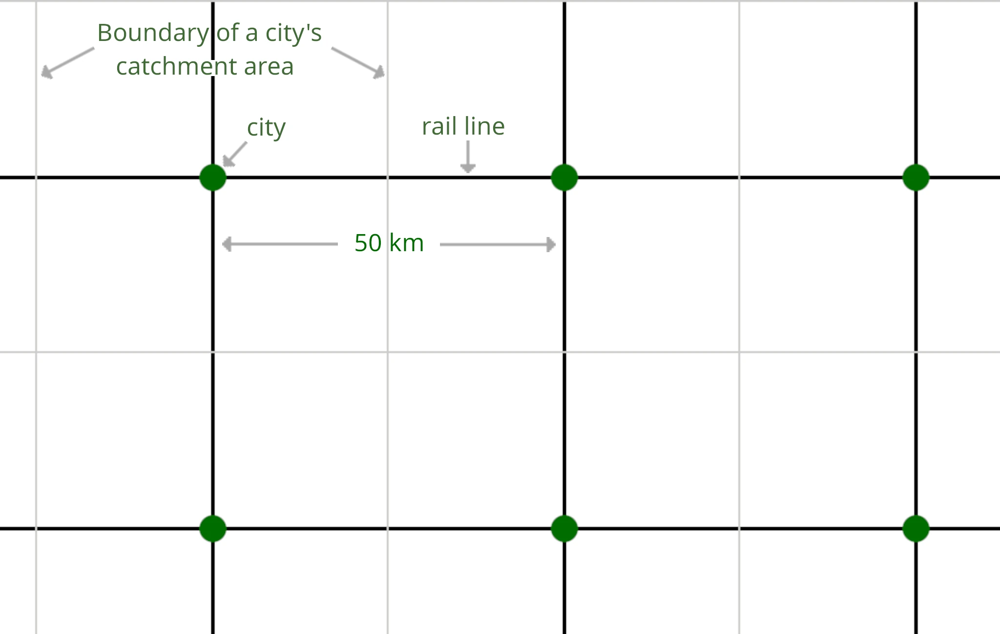

8. Infrastructure
8.2 Public Transportation
In contrast to the futurities described so far, those that follow in this chapter involve a much higher share of construction costs for physical objects—such as rails, roads, cables, and buildings. Infrastructure is something countries build up over decades, not something that can be replaced quickly, no matter how much goodwill there may be. Nevertheless, I continue to follow the basic concept of this book: I am not trying to improve an existing system. I am trying to design the best possible societal systems within the constraints described in Chapter 4—starting from a blank slate, so to speak. Because only once one can picture an ideal result does it make sense to compare it with the current state and look for steps to move towards it (see Chapter 13). This applies to infrastructure just as much as it does to education.
One task that, in existing societies, is shouldered in part by the state is mobility. Here, I want to propose my own design of how to regulate mobility at the level of society, rather than leaving every citizen to deal with this problem on their own—simply because, at the societal level, this problem can be solved orders of magnitude more efficiently and environmentally friendly than by individuals acting alone.
Short distances will be covered independently by every citizen: on foot, by bicycle, or by e-bike. All that society can and should do here is provide well-developed pedestrian and cycling paths.
Things get interesting once a destination is too far away for cycling.
The slowest, but also the most flexible, form of public transportation—the bus—serves in this futurity to connect villages to their respective county seats, or more generally to the nearest city with a train station.
So that buses fulfill this purpose well, they operate around the clock and at the highest possible frequency.
Thanks to current and emerging technologies—electric propulsion and self-driving vehicles—I see a very good path to meeting this requirement at a cost that is affordable for society.
Using electric propulsion is not only better for the environment (depending on the electricity mix); it also significantly reduces fuel costs. For the same amount of energy, electricity is far cheaper than gasoline or diesel.[39] And this effect will continue to grow as photovoltaic and wind power are expanded in the future. Maintenance costs for electric motors are also much lower than for combustion engines. At present, battery prices are still very high, but that will change in the coming years. In any case, the higher upfront cost of the battery amortizes more quickly the more the vehicle is used. And apart from charging and maintenance breaks, we want the buses to run around the clock.
The largest share of the operating costs of a bus are driver salaries. With self-driving vehicles, this cost factor can be eliminated entirely. This merely requires that fare collection be handled differently. Camera monitoring ensures that vandalism or damage to the bus is sanctioned—making a driver unnecessary.
The buses operated by the state will mostly be small ones. Battery costs scale with the size of the bus. We have eliminated the cost factors which currently make it significantly more economical to use large buses—drivers and combustion engines. The major advantage of smaller buses is their higher service frequency. The average waiting time until the next bus arrives is therefore lower.
Under these conditions, how much would it cost to achieve a 10-minute bus interval?
Cost of a bus network: Currently, large buses cost around €300,000 per year (operation + depreciation).[40]
Let's start by looking at electricity costs. A minibus consumes on the order of 100 kWh of electricity per 100 km.[41] Since the state does not have to pay levies to itself, only the electricity generation cost is relevant here. Setting aside crisis-driven price spikes and assuming energy that is largely generated from renewable sources, we can work with a price of €0.10 per kWh, which in the longer term should even fall to significantly lower levels.[42] Buses running 20 hours per day (the remainder being charging and maintenance time) at an average speed of 60 km/h cover 1,200 km per day, 438,000 km per year, and consume electricity worth €43,800 in the process (438,000 km × 100 kWh/100 km × 0.10€/kWh).
Without intending to conduct a study about it: if we have small, self-driving electric buses whose components are designed for very long service lives, then I think they should be operable for €80,000 per year (operation + depreciation). This is because the largest cost factor—driver salaries—is eliminated, fuel and maintenance costs are much lower, and the remaining costs (such as the battery) decrease significantly with the smaller bus size.
Since we are dealing with a fictional infrastructure in a fictional country here, we make a few assumptions in order to perform rough calculations. We assume that the average village has 500 inhabitants, the average distance between two villages (and from the county seat to the nearest village) is 5 km, and the average speed of the bus (including stops) is 60 km/h.
Under these assumptions, one bus can connect six villages to a county seat once per hour (10 km of bus route per village, since there is a round trip; 6 × 10 km = 60 km).
With these six villages, the bus would thus serve 6 × 500 = 3,000 citizens once per hour. To achieve a 10-minute interval, we need six buses for these 3,000 citizens—one bus per 500 citizens.
At operating costs of €80,000 per year per bus, this results in local public transport costs of €160 per citizen per year (€80,000 / 500), less than €14 per month. Fairly calculated even less than that, as we have ignored that county seat residents benefit from these buses as well, by being able to reach the surrounding villages.
We can also deploy buses within cities and allocate their costs in an analogous way. As population density is much higher in cities, that will cost less per citizen than to connect villages.
Overall, at under €14 per month, the costs of operating the bus network are at a level that we can easily cover through the state budget, a mandatory subscription, or something similar. There is no reason at all to set up a fare accounting system for individual trips. The buses are simply part of the public infrastructure that every citizen can use freely without buying tickets. As a result, we no longer need a new solution for charging fares on driverless buses.
The state provides the buses and operates or pays for the depots in which they are charged and maintained. The counties determine the routes and timetables, that is, the exact deployment of the buses.
At night, the interval between buses is longer (for example, 20 minutes instead of 10), since each bus spends a few hours at night parked at a depot to charge its battery and, if necessary, undergo maintenance.
With this societal system—free public transport by bus and, as a result, excellently connected villages—we can resolve a major concern underlying earlier chapters: if people have to travel to the city to see a doctor or attend school (polyclinics instead of private practices, no small village schools), do we not massively worsen services for the rural population?
With free buses running at such high frequency, we have improved overall access for the rural population, rather than making it worse.
To connect cities with one another, trains are used.
For our fictional society, let us once again make a few simple assumptions so that we can perform rough calculations.
A city with a train station, including its catchment area (⇒buses), has 50,000 inhabitants. The average distance between neighboring cities is 50 km, and each city is connected, on average, to two rail lines.

Let us further assume that we want to achieve a service interval of 40 minutes on these rail lines (in each direction). We attach enough carriages to each train so that it can transport all passengers.
How much would the state have to spend on trains?58
Cost of a rail network: We assume the train travels on average at a speed of 150 km/h (including stops). This means that it takes the train 20 minutes to travel from one city to the next. We therefore need two trains per city (one train per direction on each rail line, with each train reaching two cities per interval), or one train per 25,000 inhabitants.
It is difficult to find good, freely available figures on the acquisition and operating costs of trains. Since an approximate result is sufficient, I have made my own rough calculation based on estimates.
A double-decker carriage offers space for 100 passengers. With ten such carriages, we should have sufficient capacity, with some reserve, to transport all passengers. I assume acquisition costs of €500,000 per double-decker carriage and €5 million per locomotive. That puts the entire train at €10 million; depreciated over ten years, this amounts to €1 million per year. I was unable to find any meaningful figures for electricity consumption and therefore pessimistically assume 1,500 kWh per 100 km (for comparison: the small electric bus was at 100 kWh per 100 km …). The train therefore consumes electricity worth 150 km × 20 × 365 × 1,500 kWh/100 km × 0.10€/kWh = €1.65 million per year.
Since I estimate depreciation plus propulsion costs at around €2.65 million per train per year, I roughly estimate total annual costs per train at €4 million (the remainder covering maintenance, wages, proportional infrastructure costs, …). At one train per 25,000 inhabitants (as calculated above), this results in costs of €160 per citizen per year, or €13.35 per month.
It should definitely be examined how these costs change if shorter trains are used instead, running at higher frequency. If it were possible to achieve a 20-minute interval—or even a 10-minute interval as with buses—without becoming much more expensive, that would be far better. In that case, as with buses, one could simply go to the platform at any time without first having to think about when the next train will arrive.
At under €14 per month, we arrive at the same price level as for local public transport by bus and can therefore apply the same logic: we can easily cover the costs through the state budget, a mandatory subscription, or something similar. There is no reason at all to set up a fare accounting system for individual trips. These trains, too, are simply part of the public infrastructure that every citizen can use freely without buying tickets.
I consider it important not to design the rail network solely for high travel speeds, but to also built it out with a sufficient number of tracks. A connection between two cities should never have fewer than three tracks: one track in each direction and a passing track in the middle. This allows slower or broken-down trains to be overtaken, and enables maintenance and repairs to be carried out without interruptions. Heavily used routes should even be expanded to four tracks, so that overtaking maneuvers are possible in both directions at the same time. In addition, switches should be installed at relatively short intervals to allow flexible changes between tracks.
Just as the state maintains the road network, it also maintains the rail network. Unlike the road network, however, it is of course not freely usable, but centrally controlled. The control software should be publicly viewable, with the possibility for third parties to submit improvement proposals and point out errors.
The additional risk that a software flaw discovered in this way could be exploited for an attack is far outweighed by the additional flaws that are discovered and the lives saved through their correction.
The state will allow third parties to use the rail infrastructure for a fee. This enables private companies to offer alternative direct connections or to organize freight transport. Here, the robust rail network described above is advantageous, so that, for example, a broken-down freight train operated by a private company does not immediately block the passenger trains operated by the state.
With an excellently developed, freely usable (no ticket purchase required) local and long-distance public transport system, we have already massively reduced the attractiveness of privately owned cars. To strengthen this effect even further, car ownership should be subject to very high taxes. These taxes reflect the additional infrastructure costs, noise pollution, risks to others, and environmental damage caused by private passenger cars. Owning a car thus becomes a toy for the wealthy, who pay the state well for this privilege. There is no longer any necessity for private individuals to own a car—regardless of whether they live in the city or in rural areas. If a car is needed for transporting goods (moving house, buying furniture, …), one can rent a car.
This shift away from private cars is not only good for the environment and quality of life; it also unlocks substantial economic potential. If, on average, there are ten passengers on each bus, and each of those passengers would otherwise have driven their own car for one hour per day, then a single bus replaces roughly 140 cars59. Society therefore only has to pay for this one bus instead of 140 vehicles. That frees up a great deal of money for other purposes.
Since in this futurity hardly anyone owns and manually drives a car anymore, in an emergency the public buses should be deployable as needed, if emergency services alone are not enough. I do not know which solution for that would be most efficient. But a locality that is completely cut off from the rest of the country by a disaster should be able to control its buses independently in order to rescue people, transport materials to where they are needed (so the bus seats should be removable), and so on.
Even without the realization of this futurity, car rental will change radically worldwide over the coming decades—provided that self-driving cars are not banned. And this will happen without states having to do anything special. The normal market incentives of capitalism will be sufficient.
Cars will no longer be booked from a rental company for specific days, to be picked up from a particular station and returned there at the end of the rental period. Instead, one will specify in a rental app what type of car is needed and when. The app will display hourly prices that depend not only on the type of vehicle, but also on its availability (the utilization of the rental fleet at that time) and on how far in advance the reservation is made. Reservations will still be possible just a few minutes before the rental begins, provided that vehicles are available.
At the start of the rental period, the vehicle will then be parked and ready to depart in front of one’s home address. The car will drive itself to the respective destination, unless one pays a surcharge for being allowed to drive it manually (which represents a higher risk of accidents and the associated costs for the rental company).
At the beginning of this development, these app-booked vehicles will be ordinary self-driving cars. Sooner or later, however, there will instead be models built specifically for this purpose: more durable, more resistant to damage, and easier to clean.
As long as one does not need a car particularly often, but for example only for family outings that would be too stressful with public transport, a large shopping trip, or a transport task, the occasional rental of a car via an app will not only be much cheaper, but will also require less time and cause less stress than maintaining one’s own car (parking space, insurance, taxes, maintenance, and so on).
Now, the costs of using a car arise per trip, instead of most costs being incurred as a flat expense regardless of how much the car is actually used. This makes public transport far more attractive for every single journey, since it saves a noticeable amount of money each time, rather than merely doing something good for the environment.
So the ability to book car trips via an app in this way will emerge worldwide. For anyone who books a car only when needed instead of owning one, it also becomes attractive to reorganize their own life in such a way that a car is needed less often.
The combination of well-developed free public transport and high taxes on private vehicles in my futurity leads to a larger market for app-booked cars in this nation, since hardly anyone owns a car.
A state with far fewer cars can, of course, also take this into account in urban planning. There is then no longer any reason to build so many multi-lane roads. Instead, more space between buildings can be used for pedestrian and bicycle paths, as well as for greenery.
We will look at a concept for this in Chapter 9.3 (Cities).
Review of Requirements